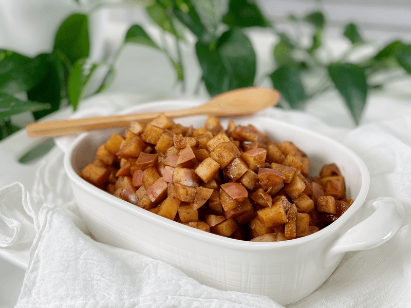

These Cinnamon Skillet Apples taste like a warm apple pie right out of the oven. This recipe is 100% guilt-free, oil-free, vegan, no added sugar, and is a perfect addition to your morning porridge, a mid-afternoon snack, or dessert after dinner. If you find yourself with an abundance of delicious organic apples, I highly recommend taking a peek at this recipe.

There are so many beautiful ways to enjoy this recipe. You can keep a container of these in the fridge to use throughout the week, plus you can pack some away in the freezer for a future date. I always keep a container of mini raw vegan, gluten-free pie crusts in the freezer. For a quick dessert, you could pop one out, add a heaping scoop of these apples in the crust, and bake until warmed through.
Endless Ways to Enjoy Cinnamon Skillet Apples